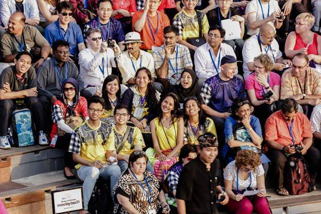
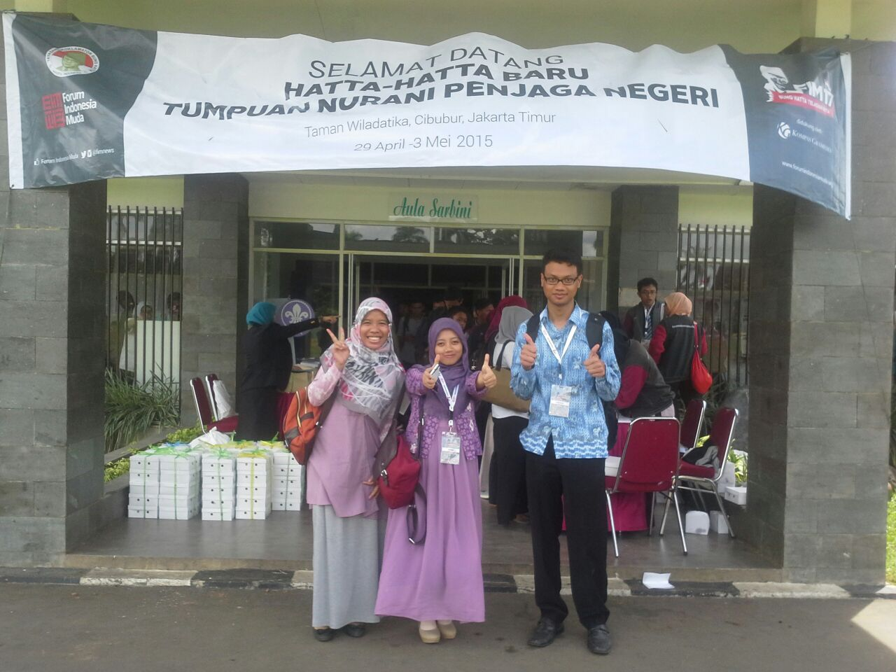
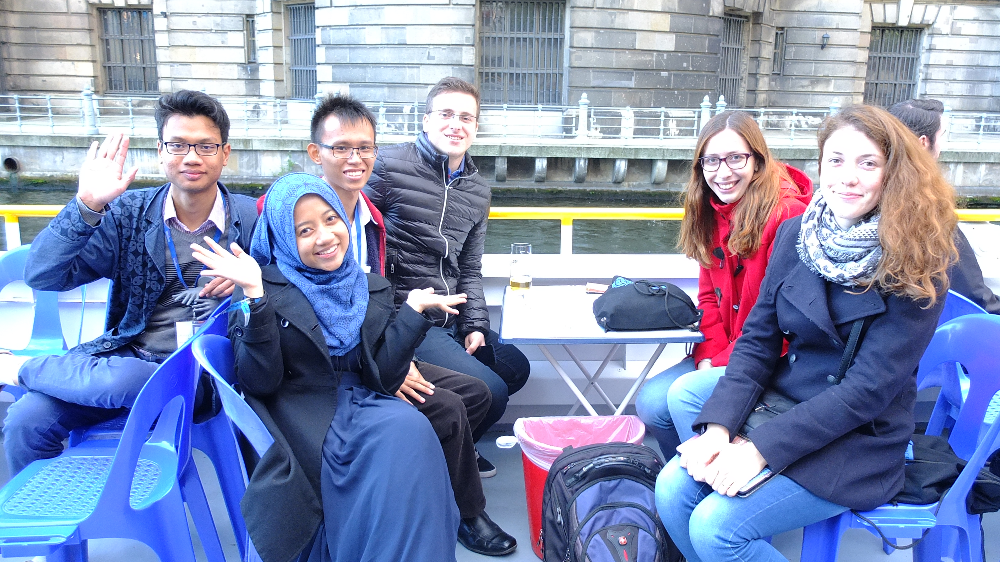
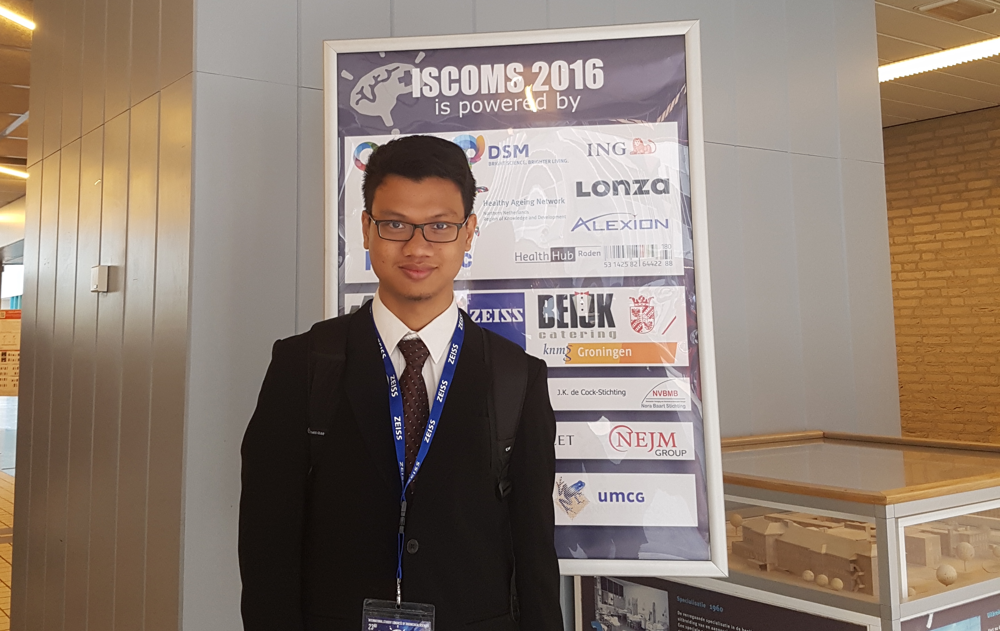
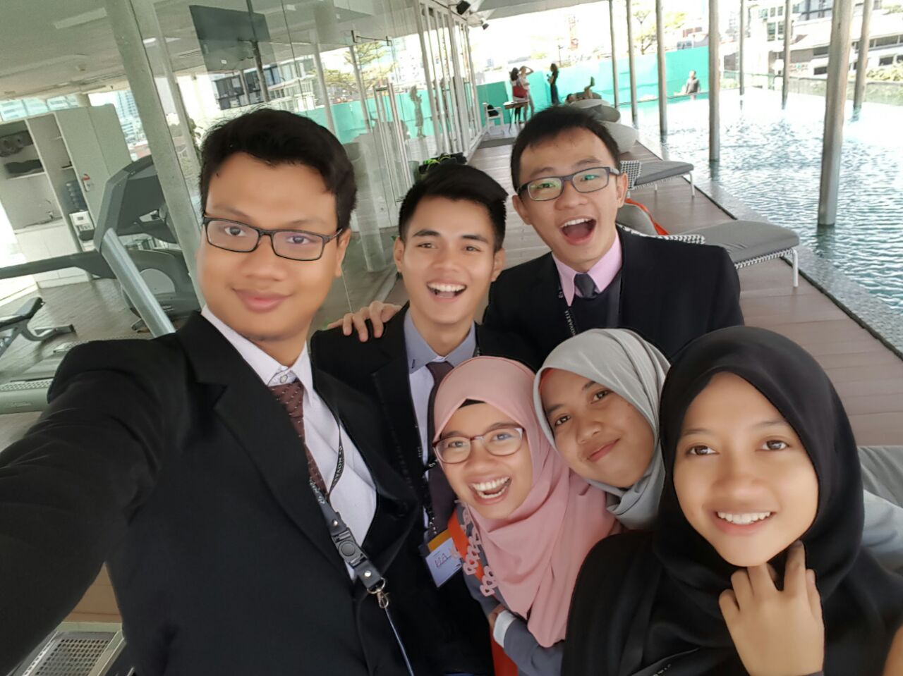
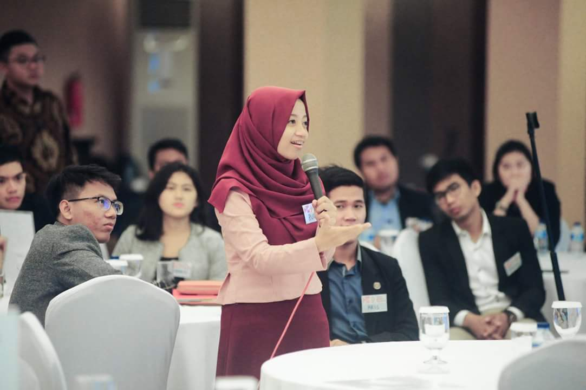
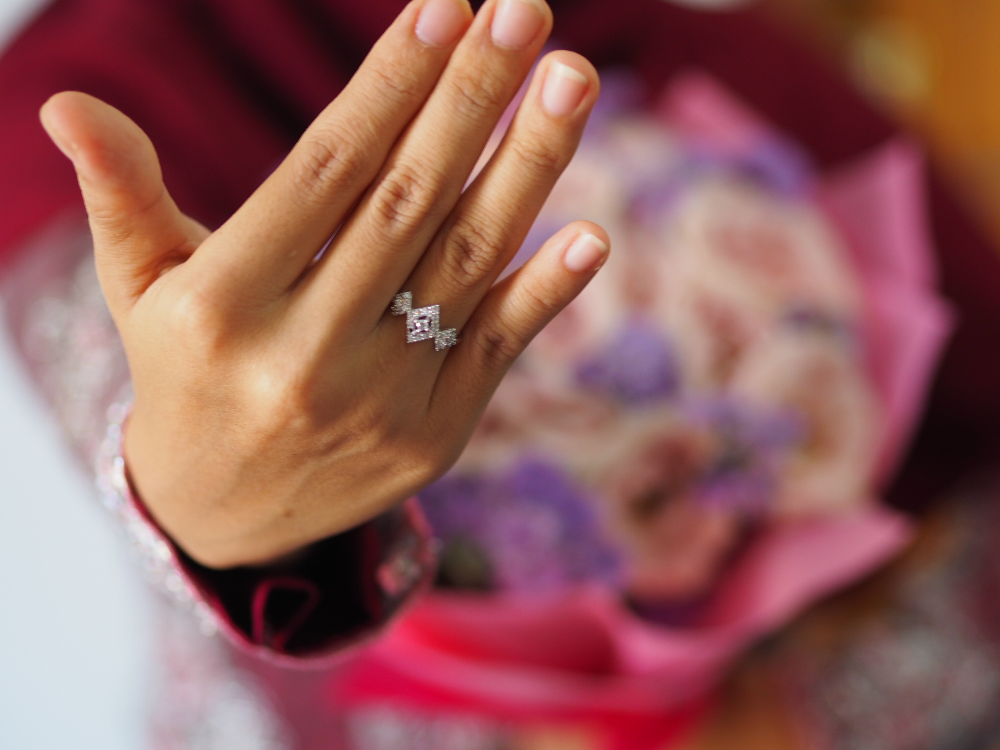

Timeline
-
Bali, July 2014
Bali 2014 was the first time they met and knew each other, although they are both competitor at two very same events, GAMAMED fair 2009 as well as National Biology Olympiad 2010 Medan. Having the same passion on the competition, they are back to take part in the international biology Olympiad as volunteers. Unintentionally, both of them are assigned to be volunteers for jury guide.
 -
Cibubur, May 2015
Suggested by their own friends, Thoriq and Ruli both applied for Forum Indonesia Muda batch 17 to expand their networks with the best people from the countries. From over 5000 applicants, they are accepted in the program and destined to meet in this networking event and learn together.
 -
Berlin-Prague, September 2015
Having similar study background and research in medical field, they both submitted their own research works to ESC Berlin 2015 and were accepted in the program. Once again, they are destined to meet and travel together to quench their passions. They even worked together to find for travel grants and sponsorships for the conference.
 -
Netherlands, June 2016
They also participated in another biomedical conference of ISCOMS 2016 in Groningen, Netherlands
 -
Jakarta, June, 2016
Upon return from the ISCOMS 2016, they joined the Novartis Biocamp after selection to discover the healthcare and pharmaceutical industry in Indonesia with other future leaders.
 -
Jakarta, 2015-2016
They were also selected from more than 1300 applicants to participate in the YLI (Young Leaders for Indonesia) National with different wave (7 and 8) to enhance and develop their potential for contribution as well as network with Indonesia future leaders
 -
Engangement Day: Purworejo, March 5th 2017
khitbah
 -
The day
And We are here, the day we start our new life and struggle together for the rest of our life